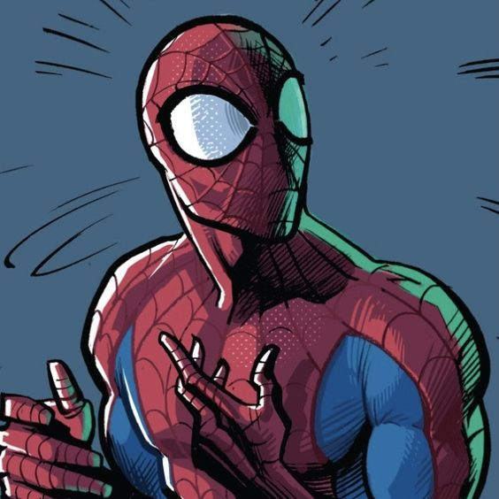

um super-herói que aparece nos quadrinhos americanos publicados pela Marvel Comics. Criado pelo escritor-editor Stan Lee e pelo artista Steve Ditko, ele apareceu pela primeira vez na antologia de quadrinhos Amazing Fantasy #15 na Era de Prata dos Quadrinhos.

Quando o Homem-Aranha apareceu pela primeira vez no início dos anos 1960, os adolescentes dos quadrinhos de super-heróis eram geralmente relegados ao papel de ajudante do protagonista . A série Homem-Aranha inovou ao apresentar Peter Parker, um estudante do ensino médio de Queens , Nova York, como a identidade secreta do Homem-Aranha , cujas "auto-obsessões com rejeição, inadequação e solidão" eram questões com as quais os jovens leitores poderiam se relacionar... Enquanto o Homem-Aranha tinha todos os ingredientes de um ajudante, ao contrário dos heróis adolescentes anteriores, como Bucky e Robin , o Homem-Aranha não tinha mentor de super-heróis como Capitão América e Batman; ele, portanto, teve que aprender por si mesmo que " com grandes poderes, também devem vir grandes responsabilidades " - uma linha incluída em uma caixa de texto no painel final da primeira história do Homem-Aranha, mas posteriormente atribuída retroativamente a seu guardião, seu falecido tio Ben. Parker.
Desenvolvido por Kaio Bez 2022.